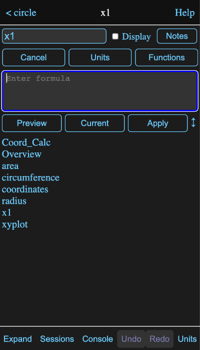
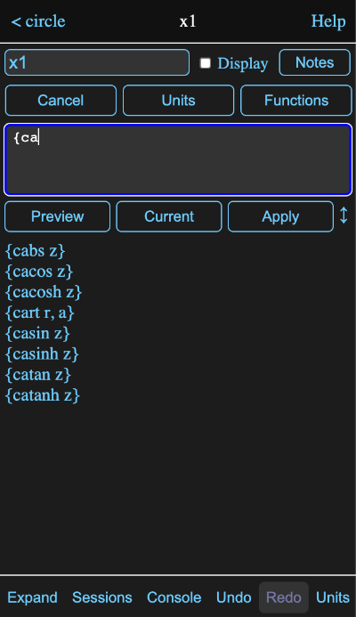
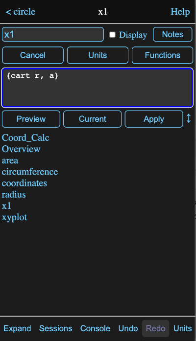
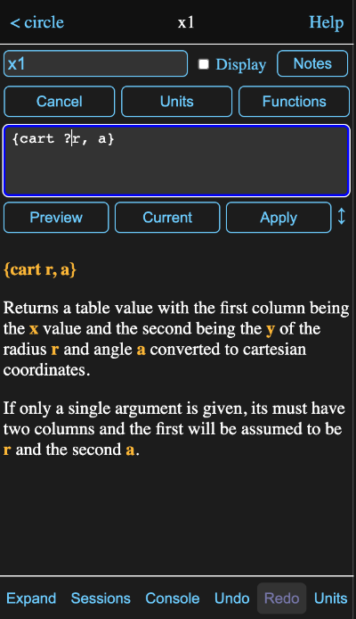
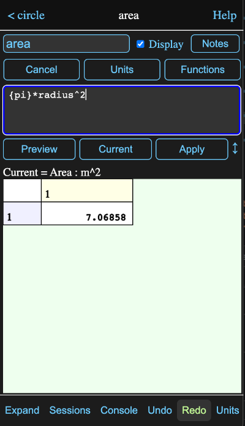
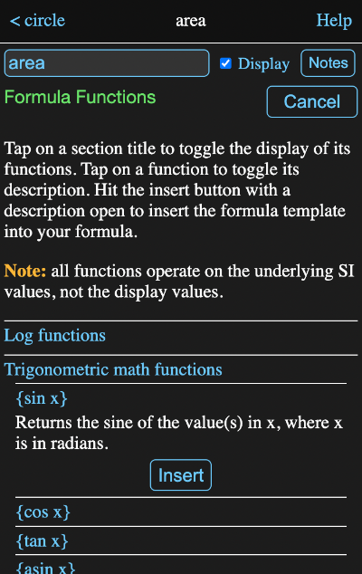

Formula Fields
All information views for tools have one or more formula fields, like this:

You can tap in this field and enter or edit the formula directly. Once you hit the return key or leave the field, the new formula will be applied and new results calculated as needed.
These fields can be identified by the equal sign in front of them. Tapping on the equal sign will cause the value calculated by the formula to be forgotten and recalculated. This normally isn't necessary as Math Minion will forget and recalculate tools whenever one of their inputs is modified.
Directly editing a formula field is fine for simple one line formulas, but for more complex formulas or where you would like help with units or functions, you should invoke the formula editor. This is done by either typing shift-enter while editing the field or by tapping the ⤢ icon to its right.
Formula Editor
The formula editor consists of a text area where the formula is entered or modified, along with a number of buttons and a preview area.
You can drag on the up/down icon ↕ to the right of the Apply button to adjust the relative sizes of the input and preview areas.
Previews & Completions
When the formula editor appears, the current formula, if any, will appear in the text area with any cursor position or selection from the formula field maintained. What appears in the preview area will depend on the cursor position and the formula.
If the cursor is in a position where it appears a reference to another tool might be appropriate, as in the case above where the formula is blank, then a list of available tools appears in the preview area. In this case, the expression has been created in the tools.models.circle model of the Getting Started session and the values represent its tools.
If there are characters in front of the cursor, the list will be reduced to items starting with those characters.
Tapping on a element in the preview area will insert it into the formula. You can also type a tab character or a period to insert the top element of the list, as long as at least one character has already been typed.
If the cursor is preceded by a brace, {, then all the available functions are listed in the preview area, with the list being reduced as additional characters are entered.
Tapping on an element of the preview list, or typing a tab character, will insert the function in the formula and place the cursor before the first argument.
If the cursor is preceded by a ?, white space and the function name, then a brief description of the function and its arguments will appear in the preview area.
If the cursor is preceded by a value name and a dot, then the available parameters for that value are listed in the preview area.
When the cursor appears to be where a conversion unit is appropriate, a list of match units are displayed in the preview area.
If the cursor isn't preceded by something where a suggestion in appropriate, then the preview area will show the last previewed calculation value. Initially this will be the value of the original formula before editing.
Here the cursor is at the end of the formula for area in that circle model and a value reference or function call would not be appropriate.
As you enter or edit the formula, you can tap the Preview Button or type ctrl-enter to evaluate the current (edited) formula in the preview area regardless of the cursor position. If you select only a part of the formula before previewing, only the selected portion will be evaluated. This is a handy way to debug complicated formulas.
Tapping the Current button or type alt-enter (option-enter on a Mac), will preview the original unedited formula.
Import File
A formula starting with a single quote means the rest of the formula will be a text string and sometimes you might want to get that text from and existing file.
So when the formula consists of just a single quote, the Preview button becomes an Import File button. Tapping it will present a file browser where you can select a text file to import. The resulting formula will be a single quote followed by the contents of the file.
Multiple Lines and Tabs
In more complex formulas and with some functions, it is common to space the formula out over multiple lines and use tabs to improve the readability. There are a couple of features to assist with this.
When you add a new line to an already indented line, the editor will automatically match the indentation.
You can increase or decrease the indentation of by selecting multiple lines and then typing tab or shift-tab respectively.
Units Browser (ctrl-u)
Presents a view where you can select from the available units. The left pane contains the defined types and selecting one of those will fill the right pane with the units that are defined for that type.
In the image below, the type Area has been selected and then hectare was selected from the right pane. This places the selected unit in the input field.

Tapping the Apply button will insert the unit into the formula, enclosed in double quotes if it contains , / or ^.
You aren't limited to the units listed and can create your own by combining existing units in the input field, either by typing them in directly, or by selecting them from the lists. If you add a - or / operator to the end of the input field, selecting another unit will result in it being appended, rather than replacing the existing selection.
If you need to define a completely new base unit, see custom units on the units help page.
This browser is also used for selecting display units for expressions, matrices, data tables and graphs.
Function Browser - (ctrl-f)
While the preview area is handy for entering functions, sometimes you will want to browse the functions and descriptions by category to see what is available. This is what the function browser does and as you can see in the image below, it has what are hopefully pretty clear instructions on how to use it.
In this case the section for trigonometric functions has been selected and then the sine function within it.
